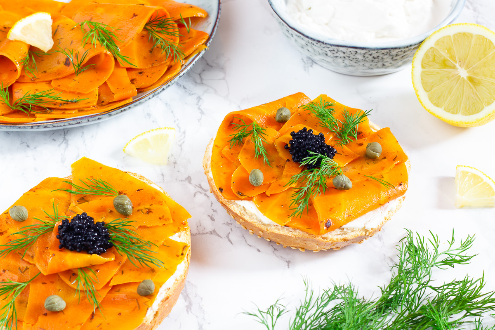

Vegan Salmon

Description
Dive into the flavors of the sea with this incredible vegan salmon recipe. Crafted with plant-based ingredients, this vegan alternative captures the essence of traditional salmon, offering a delicate and savory taste. The texture is remarkably similar, with a tender and flaky consistency that will astonish your senses. This vegan salmon is not only a cruelty-free option but also a fantastic way to enjoy the health benefits of omega-3 fatty acids without any animal products. Whether you're a seafood enthusiast or a vegan looking to explore new culinary horizons, this vegan salmon will take your taste buds on an unforgettable journey.
Prepare to be amazed by the versatility of plant-based cooking. With a combination of simple ingredients and a touch of creativity, you'll create a vegan dish that rivals the flavors of the ocean. So gather your ingredients, roll up your sleeves, and let's dive into the magic of vegan seafood!
Ingredients
- 1 large carrot, peeled and trimmed
- 2 tablespoons soy sauce
- 1 tablespoon liquid smoke
- 1 tablespoon olive oil
- 1 tablespoon maple syrup
- 1 teaspoon nori flakes (dried seaweed)
- ½ teaspoon garlic powder
- ½ teaspoon onion powder
- ¼ teaspoon salt
- ¼ teaspoon black pepper
Steps
- Preheat your oven to 400°F (200°C). Line a baking sheet with parchment paper.
- Using a vegetable peeler, shave the carrot into thin, long strips, resembling salmon slices.
- In a small bowl, whisk together the soy sauce, liquid smoke, olive oil, maple syrup, nori flakes, garlic powder, onion powder, salt, and black pepper.
- Place the carrot strips in a shallow dish and pour the marinade over them. Gently toss to ensure the carrot slices are evenly coated. Let them marinate for at least 10 minutes.
- Arrange the marinated carrot slices in a single layer on the prepared baking sheet.
- Bake in the preheated oven for 15-20 minutes, or until the carrot slices are tender and slightly caramelized.
- Remove from the oven and let the vegan salmon cool for a few minutes before serving.
- Enjoy the delightful taste and texture of this vegan salmon, perfect for sushi rolls, salads, or as a standalone seafood alternative.